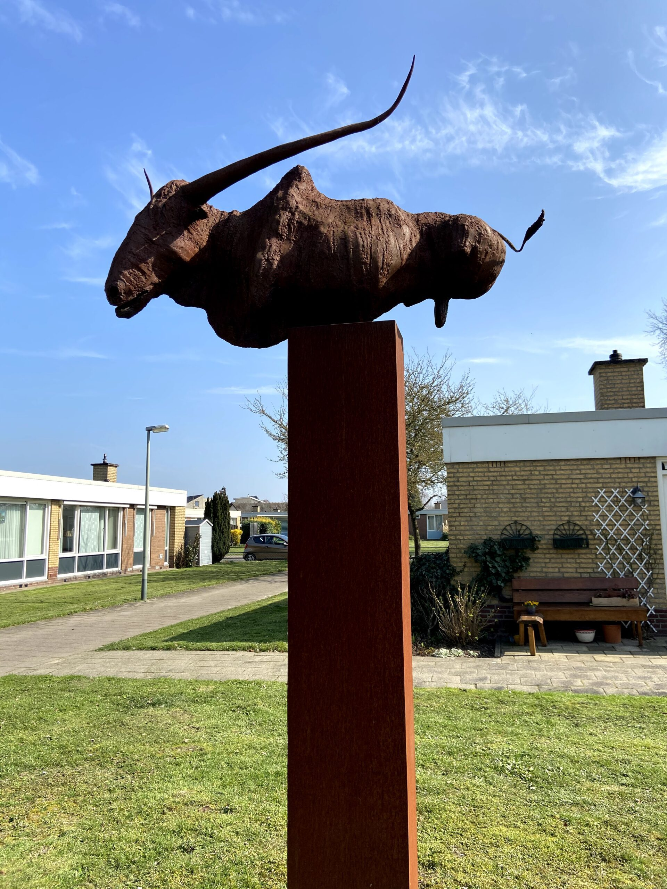
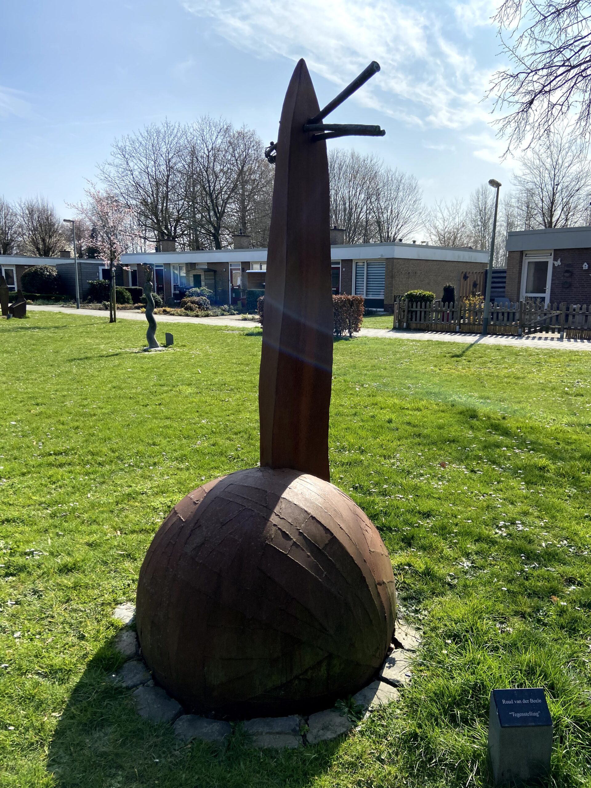

Feitjes over Susteren
- 1. Susteren verkreeg in 1276 stadsrechten.
- 2. Susteren ligt op een hoogte van 31 meter.
- 3. Ten Noordoosten van Susteren loopt de Middelsgraaf.
- 4. Station Susteren is overgebleven van de steenkoolmijnen.
- 5. In 25 jaar is de bevolking met ongeveer 1000 personen gestegen.
Stier
Deze stier was 1 van de eerste beelden in de beeldentuin. Ik woon hier vanaf dat ik 6 jaar oud was en deze staat er al sinds dien.
"Beeld"
Naderhand zijn er beelden bijgekomen, zoals deze. Heb niet veel met kunst helaas, dus ik heb er eens naar gekeken. Daar stopt het voor mij dan helaas ook.
